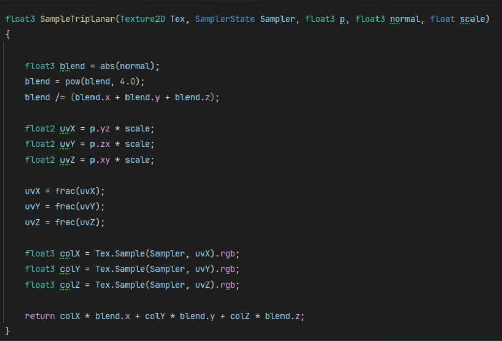
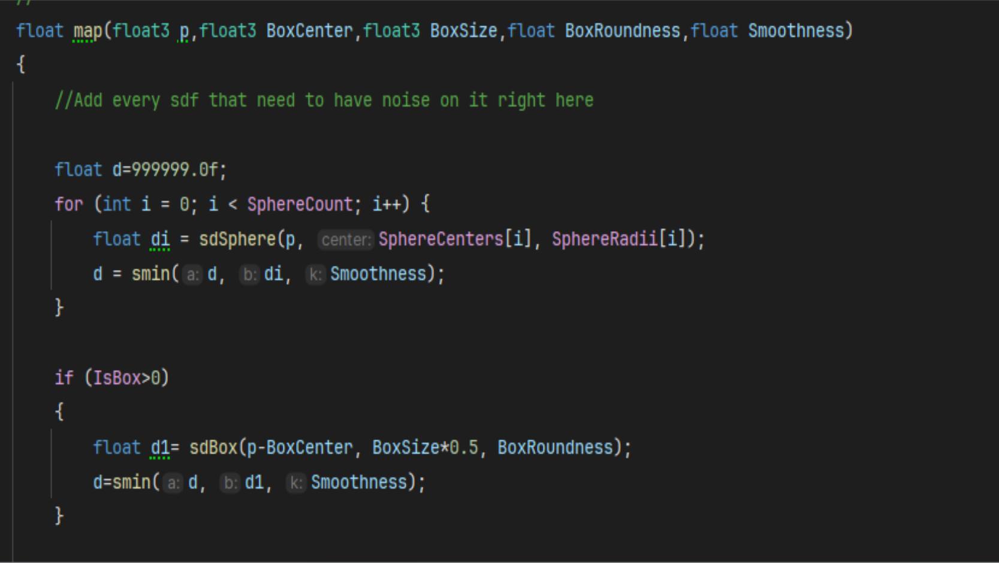

Raymarched-Slime.

// overview
Raymarched-Slime is a real-time 3D shader plugin built in Unreal Engine. The focus was on creating a custom shader rapresenting a modular slime — using raymarch, SDF and a small C++ architecture.
The project was made for my final test at my three years academy program. The scope was to learn more about technical shaders using HLSL.
// technical_challenges
01
Real-time SDF — Simulating any model using simple shapes. This has been resolved by creating a smooth union function in the shader script. This function will blend the shapes togheter creating a much complex one.
02
Modular texture — Adding a texture to an unknown shape. This has been addressed using the triplanar mapping function in the shader script. This function will take the normal from each axis and wrap the texture smoothly around the slime.
03
Designer friendly — Having a big amount of variables can be quite messy. In order to fix this, I've created a simple structure in C++ hiding non-used properties simplifying designer experience.
// gallery




// links